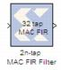

The Xilinx 2n-tap MAC FIR Filter reference block implements a multiply-accumulate-based FIR filter. The three filter configurations help illustrate the tradeoffs between filter throughput and device resource consumption. The Virtex FPGA family (and Virtex family derivatives) provide dedicated circuitry for building fast, compact adders, multipliers, and flexible memory architectures. Each filter design takes advantage of these silicon features by implementing a design that is compact and resource efficient.
Implementation details are provided in the filter design subsystems. To read the annotations, place the block in a model, then right-click on the block and select
Explore from the popup menu. Double click on one of the sub-blocks to open the sub-block model and read the annotations.
J. Hwang and J. Ballagh. Building Custom FIR Filters Using System Generator. 12th International Field-Programmable Logic and Applications Conference (FPL). Montpellier, France, September 2002. Lecture Notes in Computer Science 2438.